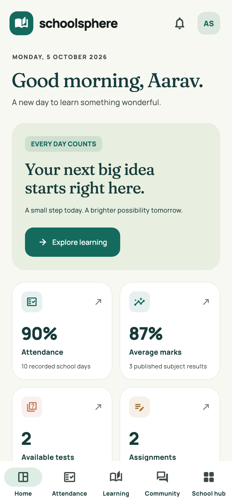
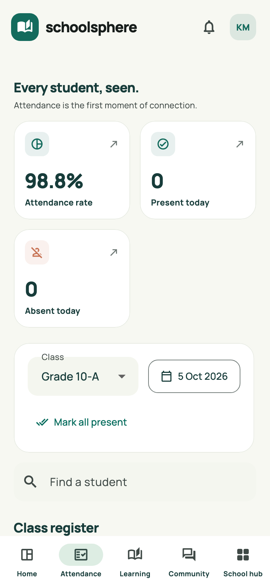
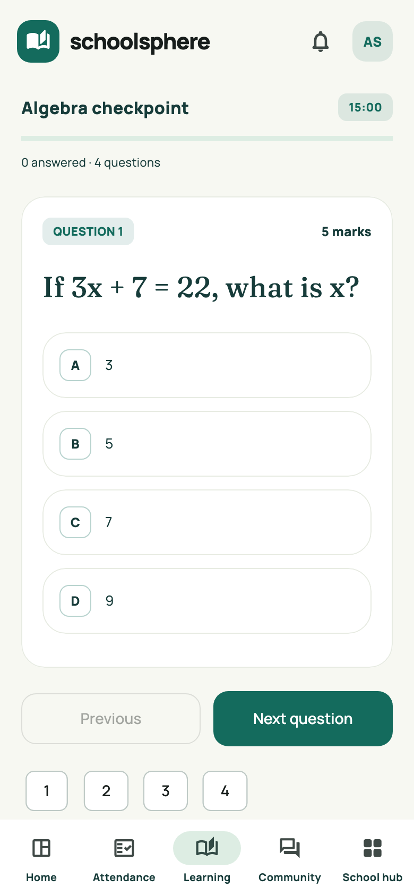
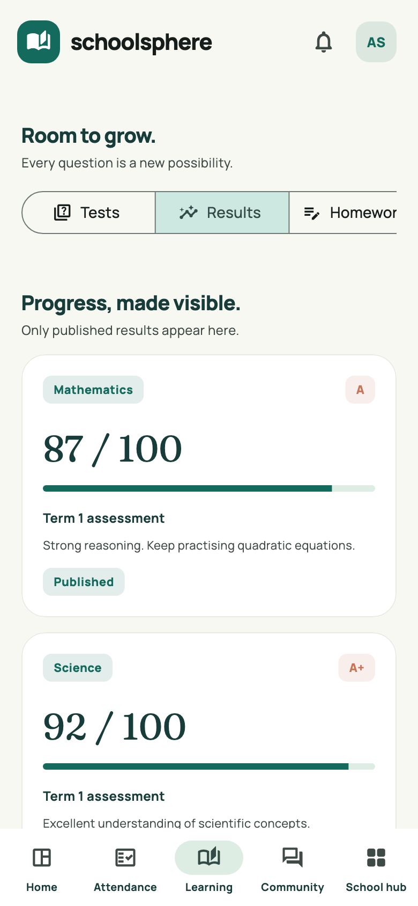
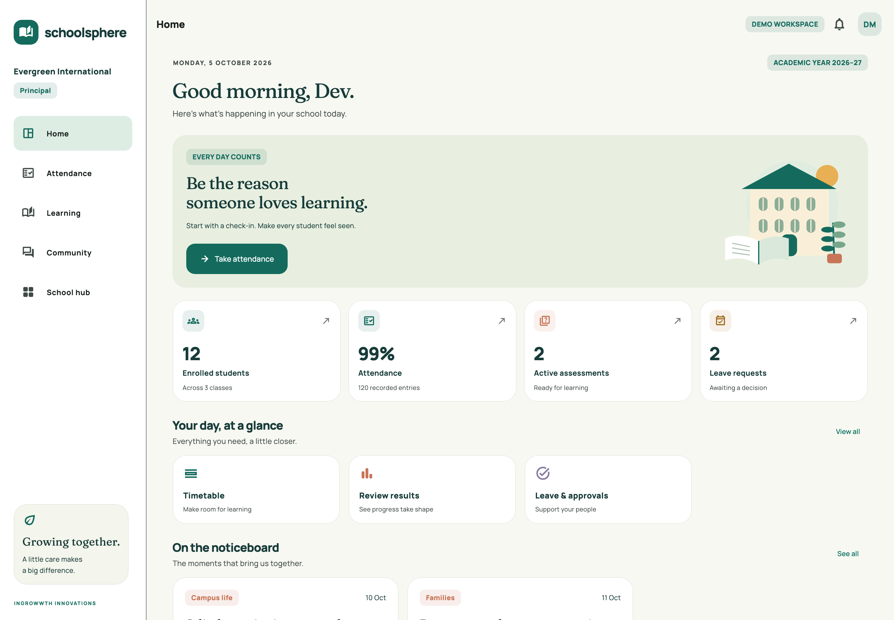

INGROWWTH INNOVATIONS · MOBILE APP PORTFOLIO
One thoughtful place.
A brighter school day.
SchoolSphere brings attendance, learning, families and school leadership together in a beautifully connected Flutter application.
Flutter & Dart5 connected rolesAndroid demoResponsive preview




See the bigger picture.
A dedicated principal workspace connects school-wide attendance, academic records, leave approvals and administrative essentials.

These are actual Flutter-rendered screens using fictional identities and records. This is an independently built portfolio demonstration. Live accounts, push delivery and store distribution require external configuration.